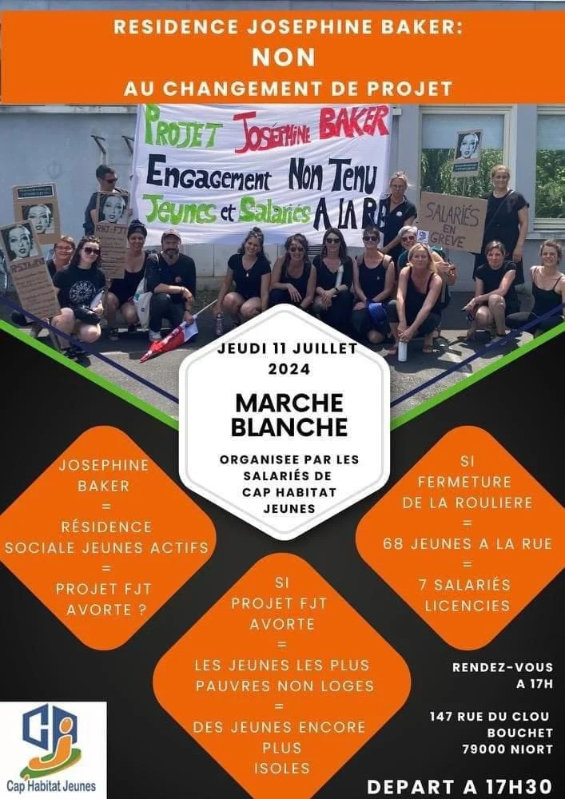

Annonce archivée
Résidence Joséphine-Baker. Appel à une marche blanche au Clou-Bouchet
Date indiquée par Facebook · 11 juillet 2024
Repères éditoriaux
Les salariés de Cap Habitat Jeunes appelaient à une marche blanche le 11 juillet 2024. L’affiche donnait rendez-vous à 17 h au 147 rue du Clou-Bouchet, à Niort, pour un départ à 17 h 30. Elle alertait sur le sort des jeunes logés et des salariés si le projet venait à être abandonné.

Sources
Archive rouge · document diffusé sur Facebook · AR-0002-FB-01323
À lire aussi · À la rentrée 2026, au moins 2 355 enfants restés sans solution d’hébergement